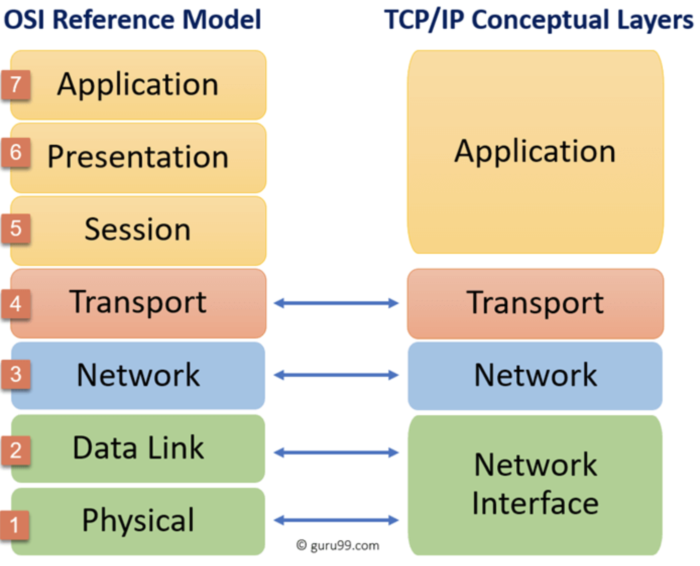

Qualité de développement
La programmation réseau avec Java
2A - Bachelor Universitaire de Technologie
IUT d'Orsay - Université Paris-Saclay - 2023/2024
IUT d'Orsay - Université Paris-Saclay - 2023/2024

A socket
-
At the core of Java’s networking support is the concept of a socket.
- A socket identifies an endpoint in a network.
-
Socket allows a single computer to serve many different
clients
at once, as well as to serve many different types of information. -
This is accomplished through the use of a port, which is a numbered socket on a particular machine.
- A server process is said to listen to a port until a client connects to it.
-
A server is allowed to accept multiple clients connected to the same port number, although each session is unique.
- To manage multiple client connections, a server process must be multithreaded.
IP and TCP protocols
Socket communication takes place via a protocol. IP and TCP protocols
- Internet Protocol (IP) is a low-level routing protocol that breaks data into small packets and sends them to an address across a network.
- Transmission Control Protocol (TCP) is a higher-level protocol that manages to robustly string together these packets, sorting and retransmitting them as necessary to reliably transmit data.
An Internet Address
- A key component of the Internet is the address.
An Internet address
is a number that uniquely identifies each computer on the Net. - All Internet addresses consisted of 32-bit values, organized as four
8-bit values (IPv4, Internet Protocol version 4).192.54.12.68
- A new addressing scheme, called IPv6 has come into play
(128-bit values organized into eight 16-bit chunks).2001:0db8:0000:85a3:0000:0000:ac1f:8001
The name of an Internet Address
- The name of an Internet address, called its domain name, describes
a machine’s location in a name space. - For example, www.HerbSchildt.com is in the COM top-level
domain (reserved for U.S. commercial sites);
- it is called HerbSchildt, and www identifies the server for web requests.
- An Internet domain name is mapped to an IP address by the Domain Naming Service (DNS).
- This enables users to work with domain names, but the Internet operates on IP addresses.
Port number
- Once a connection has been established, a higher-level protocol ensues, which is dependent on which port you are using.
- TCP/IP reserves the lower 1,024 ports for specific
protocols :
- 21 is for FTP; 23 is for Telnet; 25 is for e-mail; 80 is for HTTP; ...
- It is up to each protocol to determine how a client should interact with the port.
- For example, HTTP is the protocol that web browsers and servers use to transfer hypertext pages and images.
Network programming
- TCP/IP sockets are used to implement reliable, bidirectional, persistent, point-to-point, stream-based connections between hosts on the Internet.
- A socket can be used to connect Java’s I/O system to other programs that may reside either on the local machine or on any other machine on the Internet.
Java and network programming
- One of the most important reasons that Java is the premier
language for network programming are the classes defined in the
java.netpackage. -
There are two kinds of TCP sockets in Java.
- The
ServerSocketclass is designed to be a "listener," which waits for clients to connect before doing anything.- Thus,
ServerSocketis for servers.
- Thus,
- The
Socketclass is for clients. It is designed to connect to server sockets and initiate protocol exchanges.
- The
TCP/IP Client Socket
-
The creation of a
Socketobject implicitly establishes a connection between the client and server. - Here are two constructors used to create client sockets:
Socket(String hostName, int port)Creates a socket connected
to the named host and port.Socket(InetAddress ipAddress, int port)Creates a socket using a preexisting
InetAddress object and a port.
TCP/IP Client Socket
-
A
Socketcan be examined for the address and port information associated with it, by use of the following methods:InetAddress getInetAddress()Returns the InetAddress associated with
the Socket object. It returns null if the socket
is not connected.int getPort()Returns the remote port to which the invoking
Socket object is connected. It returns 0 if the socket
is not connected.
TCP/IP Client Socket
-
You can access to the input and output streams associated with
aSocket.InputStream getInputStream()Returns the InputStream associated with
the invoking socket.OutputStream getOutputStream()Returns the OutputStream associated with
the invoking socket.
Example
TCP/IP Server Sockets
- The
ServerSocketclass is used to create servers that listen for either local or remote client programs to connect to them on published ports. - When you create a
ServerSocket, it will register itself with the system as having an interest in client connections.
ServerSocket(int port) |
Creates server socket on the specified port with a queue length of 50. |
ServerSocket(int port, int maxQueue) |
Creates a server socket on the specified port with a maximum queue length of maxQueue. |
Example
Example
Example
Example
Example